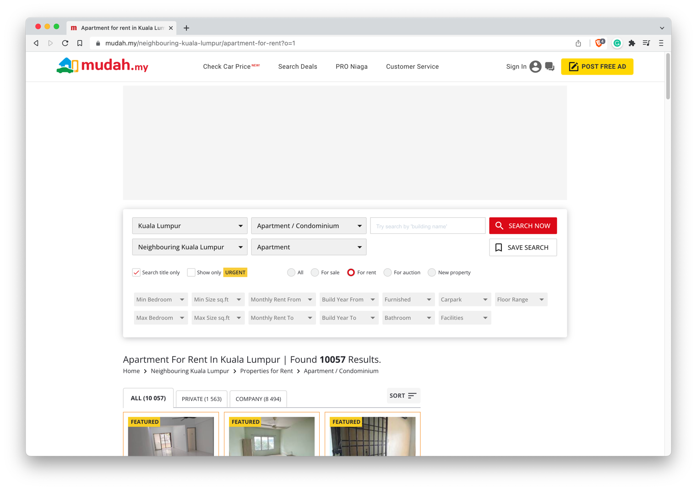
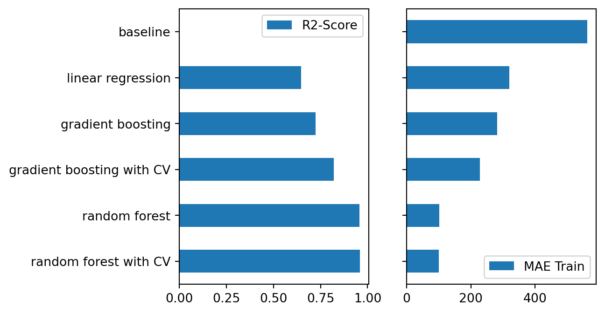
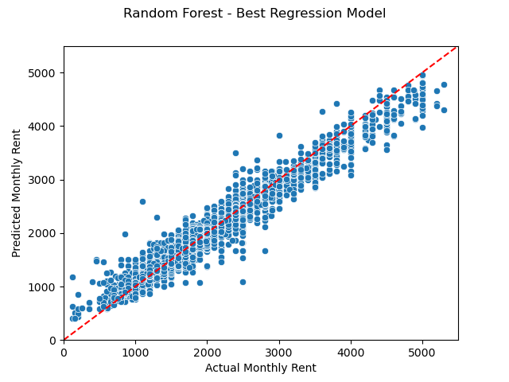
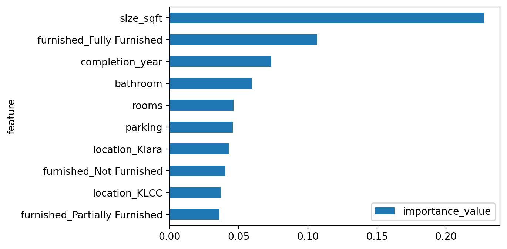

This is a machine learning project to predict unit/property monthly rent price in Kuala Lumpur region, Malaysia. The project uses a dataset from an online ads listing for property mudah.my. This project outlines the process of web-scraping/ data gathering, data cleaning-wrangling, and machine learning modeling.
This project aims to answers question about how much a unit monthly rent would be if given information such as location, number of bedrooms, parking, furnished, etc? This would help potential tenant and also the owner to get the best price of their rental unit, comparable to the market value.
Some previous work about house pricing was listed below, however most of them are targeting a dataset of house pricing or an Airbnb pricing. There are difference such as in Airbnb, the booking rarely took more than 2 weeks, let alone a year. Therefore the pricing may be different. Additionally, in Airbnb, there is text feature coming from the review given by the tenant and the owner.The better the review, the higher the rent prices – which was not available in this current project dataset.
Who is this for?
Note
This project was the TLDR-version of the complete article where author explained in much more details about the process of webscraping-data cleaning-data wrangling-feature engineering, etc. This was made also as a mandatory terms for me to pass the Pacmann bootcamp intro to machine learning class. Video of me explaining the whole project is also available under this link.
Related work
Previous work by Madhuri, Anuradha, and Pujitha (2019), Xu and Nguyen (2022), and Zhao et al. (2022) highlight the importance feature selection, and the choice of machine learning model. Based on the previous works, the most consistently performed machine learning model are Random Forest and Gradient boosting, and the MAE and R2 score usually used in evaluating the performance of the model. Although the above work are all not about apartment rent pricing, similar method can be applied to this project.
Dataset & features
The dataset is using the scraped dataset from ads listing website, particularly property-to-rent surrounding Kuala Lumpur, Malaysia.
Why Webscraping?
As 80% of data science process is about data engineering, from collection (gathering) to wrangling/ cleaning, author fells the need to brush up the skill, from available online data, relevant to the author (location: Kuala Lumpur), using webscraping tool such as BeaufifulSoup.
Detail of the web-scraping process on this project can be found in this article.
There are over 10k ads listed at the time of this project as can be seen below:

Data Description
Show Code
#importing librariesimport pandas as pdimport numpy as npimport matplotlib.pyplot as pltimport seaborn as snspd.set_option('max_colwidth', 200)import re#reload the datadf = pd.read_csv("./mudah-apartment-clean.csv")df.head(2).T
Following the works from others, author will be focusing on using Random Forest and Gradient Boosting for the two main machine learning model to try to compare to baseline (average, and linear regression).
Baseline using average means that the prediction will be using average value of the train target value. This yield a zero R2-score and the highest MAE value which will not be used as comparison in the following discussion.
The author will mainly talking about baseline using linear regression. Linear regression is one of the machine learning model, where the model objective is to minimize the total error (distance) of each predicted value against the actual value.
The comparable model will be using Random Forest and Gradient Boosting.
A gradient boosting uses iterative process to assign weights to different sample, until the model predicts the target correctly. Meanwhile, Random Forest use similar concept, but the sampling and feature selection are random, therefore reduces both bias and variance in the model.
Experiments
The experiments mostly related to the data preparation before getting into modeling. The most author spent time with is feature selection and outlier removal. One of the insight when doing feature selection is the proximity to nearby railways (KTM/LRT) is likely to affect the increase of rent price. However, the finding is that the listing is inconsistent, the same property may listed to be ‘near KTM/LRT’, but the other rows were not.
Extracting Near KTM/LRT
Show Code
#extracting near KTM/LRT from the additional facilitiesdef extract_near_ktm_lrt(text): pattern = re.compile(r'\bNear KTM/LRT\b')try: match = pattern.search(text)if match:return'yes'return'no'exceptTypeError:return text
As seen above, nearby KTM/LRT is slightly increases the median monthly rent by 50RM, however near KTM/LRT is not appearing in all row even though the unit is the same building.
Drop Unnecessary Missing Values
Some features such as ads_id, prop_name, facilities and additional_facilities would no longer needed after the previous process.
Removing the outlier is extremely important, as some of these observation e.g. monthly rent, have astronomical rent value, far exceeding the median. After multiple iteration, below is the most-ideal limit for size_sqft and monthly_rent_rm.
#removing outliers below 500, and higher than 3000 sqft and below 50 sqftdfx = dfx.query(" size_sqft > 50 & size_sqft < 3000 ")
Data Preparation
Preprocessing Original Data for Categorical Dtypes
One must paying attention to the number of categorical observation in the original data, with respect to the sampling train-test value. If, the test_size = 0.3, that means any categorical observation with a total of 3 and less, would not be distributed evenly among train and test data. Below is the process of removing some observation in which appearing only in one of the dataset (train/ test).
def extractInputOutput(data, output_column_name):""" Fungsi untuk memisahkan data input dan output :param data: <pandas dataframe> data seluruh sample :param output_column_name: <string> nama kolom output :return input_data: <pandas dataframe> data input :return output_data: <pandas series> data output """ output_data = data[output_column_name] input_data = data.drop(output_column_name, axis =1)return input_data, output_data
Show Code
X, y = extractInputOutput(data=dfx_new, output_column_name='monthly_rent_rm')
Train-Test Split Data
Show Code
#import librariesfrom sklearn.model_selection import train_test_split# Train test splitX_train, X_test, y_train, y_test = train_test_split(X, y, test_size =0.2, random_state =123)
Training Data Imputation
Numerical Data
Show Code
from sklearn.impute import SimpleImputerdef numericalImputation(X_train_num, strategy ='most_frequent'):""" Fungsi untuk melakukan imputasi data numerik NaN :param data: <pandas dataframe> sample data input :return X_train_numerical: <pandas dataframe> data numerik :return imputer_numerical: numerical imputer method """#buat imputer imputer_num = SimpleImputer(missing_values = np.nan, strategy = strategy)#fitting imputer_num.fit(X_train_num)# transform imputed_data = imputer_num.transform(X_train_num) X_train_num_imputed = pd.DataFrame(imputed_data)#pastikan index dan nama kolom antara imputed dan non-imputed SAMA X_train_num_imputed.columns = X_train_num.columns X_train_num_imputed.index = X_train_num.indexreturn X_train_num_imputed, imputer_num
Number of Cols: 63,
Number of Null Rows: completion_year 0
rooms 0
parking 0
bathroom 0
size_sqft 0
..
furnished_Fully Furnished 0
furnished_Not Furnished 0
furnished_Partially Furnished 0
nearby_railways_no 0
nearby_railways_yes 0
Length: 63, dtype: int64
Standarisasi
Show Code
from sklearn.preprocessing import StandardScaler# Buat fungsidef standardizerData(data):""" Fungsi untuk melakukan standarisasi data :param data: <pandas dataframe> sampel data :return standardized_data: <pandas dataframe> sampel data standard :return standardizer: method untuk standardisasi data """ data_columns = data.columns # agar nama kolom tidak hilang data_index = data.index # agar index tidak hilang# buat (fit) standardizer standardizer = StandardScaler() standardizer.fit(data)# transform data standardized_data_raw = standardizer.transform(data) standardized_data = pd.DataFrame(standardized_data_raw) standardized_data.columns = data_columns standardized_data.index = data_indexreturn standardized_data, standardizer
In a Jupyter environment, please rerun this cell to show the HTML representation or trust the notebook. On GitHub, the HTML representation is unable to render, please try loading this page with nbviewer.org.
In a Jupyter environment, please rerun this cell to show the HTML representation or trust the notebook. On GitHub, the HTML representation is unable to render, please try loading this page with nbviewer.org.
In a Jupyter environment, please rerun this cell to show the HTML representation or trust the notebook. On GitHub, the HTML representation is unable to render, please try loading this page with nbviewer.org.
Figure 7: Comparison Chart of R2 and MAE for all Models

Show Code
summary_df.applymap(lambda x: round(x, 2))
MAE Train
R2-Score
baseline
562.37
0.00
linear regression
319.22
0.65
gradient boosting
281.68
0.72
gradient boosting with CV
228.02
0.82
random forest
100.84
0.96
random forest with CV
99.80
0.96
After several model tested on the train dataset, Random Forest with Hyperparameter tuning has the best R2-score and MAE value as shown in the Figure 7. The best model plotted below as reference:
Best Model - RF with CV

Applied Model on Test Dataset
Show Code
# librariesfrom sklearn.ensemble import RandomForestRegressorfrom sklearn.metrics import mean_squared_error, r2_score#setting uprf_tree = RandomForestRegressor(n_estimators =500, criterion ="squared_error", max_features ="sqrt", random_state =123)#read cleaned test dataX_test_clean = pd.read_csv("./X_test_clean.csv")#fit model trainrf_tree.fit(X_train_clean, y_train)# Predict model testy_pred_test = rf_tree.predict(X_test_clean)# Calculate mean absolute errormae_rf_cv_test = mean_absolute_error(y_test, y_pred_test)# # Calculate R-squaredr2_rf_cv_test = r2_score(y_test, y_pred_test)print(f"R2-score: {r2_rf_cv_test:.3f} and MAE score: +/-{mae_rf_cv_test:.2f} RM")sns.scatterplot(x=y_test, y=y_pred_test )plt.plot([0, 5500], [0,5500], "--r")plt.xlim(0, 5500)plt.xlabel("Actual Monthly Rent")plt.ylim(0,5500)plt.ylabel("Predicted Monthly Rent")plt.suptitle("Random Forest - Test Dataset")plt.show()
# calculate the feature importancesimportances = rf_tree.feature_importances_# rescale the importances back to the original scale of the featuresimportances = importances * X_train_clean.std()# sort the feature importances in descending ordersorted_index = importances.argsort()[::-1]# print the feature importancesdict_feature_importance = {}for i in sorted_index:# print("{}: {}".format(X_train_clean.columns[i], importances[i])) dict_feature_importance.update({X_train_clean.columns[i]: importances[i]})# Create a DataFrame from the dictionarydf = pd.DataFrame.from_dict(dict_feature_importance, orient='index', columns=['values'])# Reset the index to become a columndf = df.reset_index()# Rename the columnsdf.columns = ['feature', 'importance_value']#plotfig, axs = plt.subplots(figsize=(6,4))(df .sort_values(by='importance_value', ascending=False) .head(10) .sort_index(ascending=False) .plot(kind='barh', x='feature', ax=axs));

Conclusions
Result indicates that the best model for prediction is Random Forest with hyperparameter tuning, scoring 95% on R2-score, and a shy 100 RM on MAE. This proves to be a good model since the test dataset gives a scoring of 80% on R2, and 240 RM on MAE.
There are some factors that author believed to be affecting the result/ performance of the model:
Dropping missing value reduces the performance! Initial model uses half of the data (4-5k rows) and gives poorer performance on R2 and MAE. Imputation and keeping the number of rows close to the original dataset (9k rows) proves to be improving the model. Especially on test dataset.
Feature selection importance can be seen on the last table, but initially the selection was based on paper and intuition of the author (author lives and work in KL, Malaysia for 5 years). Feature such as completion_year and nearby_railways are important in improving the model.
Last but not least is the outlier identification. The best practice for me is using jointplot to see not only the distribution of the data in 2-dimension, but also in the third dimension (the density) of the data.
Some insights after feature importance are the size plays a big role in determining the unit price, following size, the furniture availability apparently makes a big impact on the price. This gives an insight to owner of a unit to equip their unit with furniture to fully_furnished should they want to increase their unit market value.
Some of the feature that were believed to be quite important even before doing the modeling is size_sqft, furnished and location. All three is available within the 10-most features affecting the modeling. As a context, location in KLCC is like Pondok Indah in South Jakarta and location in Kiara is like BSD in South Tangerang, therefore it makes senses to see those locations increasing the price of a rent.
Future works
One of the feature that author thinks is significant but not appearing on the 10-best important feature is nearby_railways. This column is showing if a certain property has a close proximity to a railways (KTM/LRT). The issue is, half of the data is missing, hence the imputation. Author believes, the proximity to nearby railways line can be approximated using Manhanttan distance of railways line to each property unit.
References
Madhuri, CH. Raga, G. Anuradha, and M. Vani Pujitha. 2019. “House Price Prediction Using Regression Techniques: A Comparative Study.”2019 International Conference on Smart Structures and Systems (ICSSS), March. https://doi.org/10.1109/icsss.2019.8882834.
Xu, Kevin, and Hieu Nguyen. 2022. “Predicting Housing Prices and Analyzing Real Estate Market in the Chicago Suburbs Using Machine Learning.”https://doi.org/10.48550/ARXIV.2210.06261.
Zhao, Yaping, Ramgopal Ravi, Shuhui Shi, Zhongrui Wang, Edmund Y. Lam, and Jichang Zhao. 2022. “PATE: Property, Amenities, Traffic and Emotions Coming Together for Real Estate Price Prediction.”https://doi.org/10.48550/ARXIV.2209.05471.